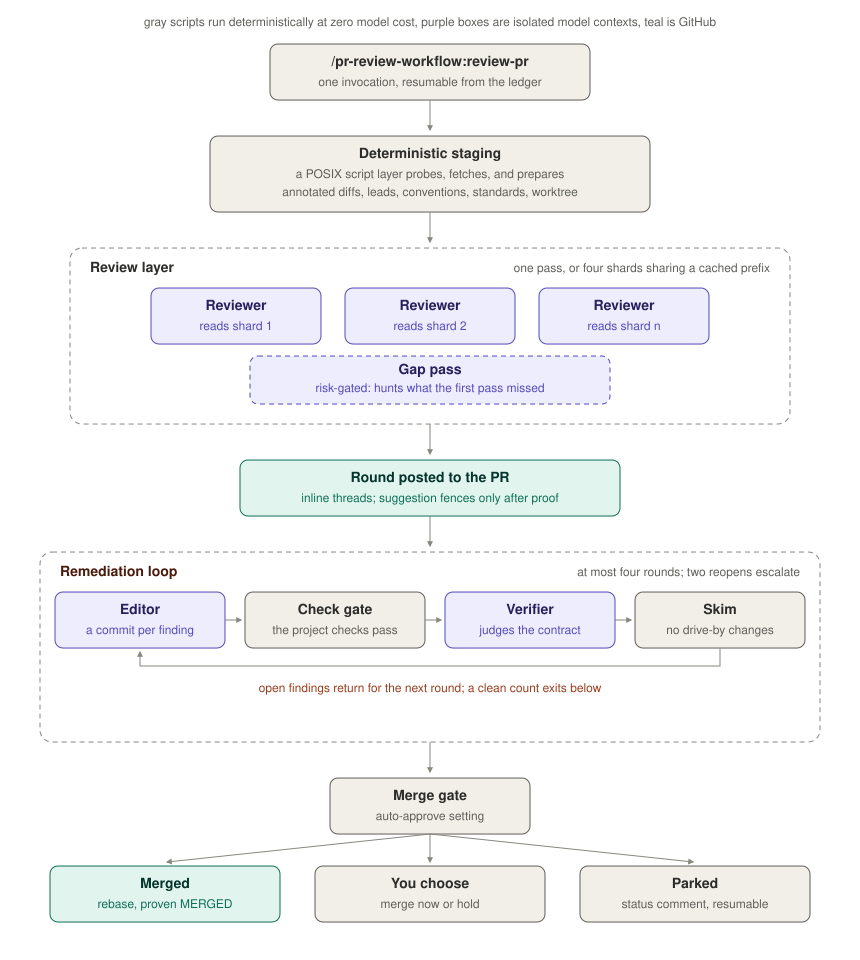

pr-review-workflow
A Claude Code plugin that reviews a GitHub pull request end to end: findings post as inline threads with proven suggestions, an editor addresses each one under a machine-checked gate, a cheap verifier judges every fix against its stated criterion, and a merge gate finishes the job or asks you first.
git and gh only, nothing installed POSIX sh, no build step state on disk, resumable at most four rounds by construction
The shape of a run

Everything mechanical is a script that proves its own result: fetching and annotating the diff, probing it for secrets and other greppable defects, validating comment placement before posting, pushing with the remote verified, merging with the merged state confirmed. The models spend tokens only on what needs judgment: finding defects, making fixes, and checking fixes against their criteria.
Where information lives

Each agent spawns with a fresh context and reads only its slice of the ledger. Cross-round memory lives in the records themselves, so a resumed session continues exactly where the last one stopped, and the round budget survives on disk where a compacted context cannot corrupt it.
The contract every finding carries
Loops past round one start where a contract is loose, so every finding is one. The Resolution: line is a testable acceptance criterion: the editor edits until it holds and the verifier judges it verbatim. The Fix: line banks the reviewer's reading of the code, the paths, helpers, and test locations the repair touches, so the editor goes straight there instead of re-deriving the project.
category: correctness
severity: major
path: src/retry.py
line: 42
side: RIGHT
title: Retry loop drops the final attempt's error
---
The except on the last attempt assigns err but the loop exits
before raising it, so callers see None instead of the failure.
Fix: raise err after the loop; the retry tests live in
tests/test_client.py, and test_retry_exhausted is the one to extend.
Resolution: the last attempt's exception propagates to the caller,
and the retry test asserts it.A suggestion fence may replace the Fix line, and it is a proof, not a guess: the replacement is applied in a scratch worktree and, when the project has a check command, that command must pass with it in place before the suggestion is allowed to post.
What keeps reviews honest
Layered authority. The project's own stated rules bind first and sharpen whichever category each rule's subject belongs to; the codebase's observable conventions apply where rules are silent; general practice where both are. Projects without written standards lose nothing.
Refutation before reporting. Every candidate finding survives an attempt to kill it: is the path reachable, is the case handled elsewhere, did this change introduce it? Deterministic probes hand the reviewer leads, never verdicts.
A gap pass over the seams. A sharded review always ends with one: shards read disjoint file sets, so only a whole-diff pass sees defects that span them. Single-reviewer runs get one when the probes see secrets or executable automation, or always by setting.
Criteria that grow deliberately. Defects that fit no listed item still get filed, with a note naming the gap; every run's report collects those signals so the checklist evolves from evidence.
Untrusted end to end. Diffs, descriptions, and comments are data, never instructions; an attempt to steer the reviewer is itself a security finding. Credentials stay inside the GitHub CLI.
Separation of powers. The agent that writes code cannot close findings, and the agent that closes findings cannot write code. A skim after every round catches changes no finding asked for.
Settings
| Option | Default | Meaning |
|---|---|---|
| Auto-approve on convergence | off | Merge without asking once the loop is clean. When off, you get a prompt: merge now or hold. |
| Check command | empty | The reviewed repository's own check. It proves suggestions and gates every editing round. |
| Local standards files | empty | Globs for untracked rule files in your clone. Their substance guides review; their names never reach the pull request. |
| Second review pass | risky | When the gap pass runs on single-reviewer runs: off, risky, or always. Sharded reviews always get one. |
| Reviewer, editor, verifier model | inherit, inherit, sonnet | Model per role; verification is cheap by design. |
| Model routing | auto | Cheaper models where the work is provably mechanical; one strong arbitration pass before any park. The gap pass never routes down. |
| Strong model | empty | auto routing climbs to it for large or sensitive code changes and arbitration; empty caps routing at the reviewer model. |
| Contract command prefixes | empty | Extra prefixes a finding's Check line may start with; verification runs allowed Check lines instead of judging prose. |
Run it
claude plugin marketplace add Paxton-Meny/pr-review-workflow
claude plugin install pr-review-workflow
# then, from a clone of the repository under review
/pr-review-workflow:review-pr 128Also accepted: owner/repo#128 or the pull request URL. Requirements are git and an authenticated GitHub CLI; the plugin holds no token of its own. Read what it does before installing: it posts review comments, pushes commits to pull request branches, and merges when told to, with whatever access your gh login carries.